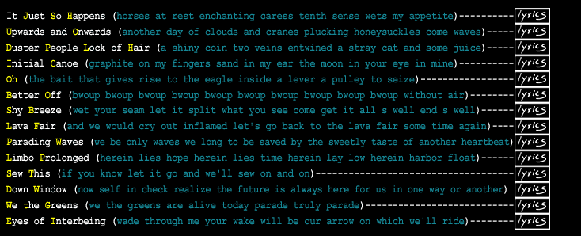

| Instrumentation- Voice, acoustic and electric geeetarr, pump organ, cheesy Casio keyboard- yardsale score!, hands on wood, shakers, melodica, Popeye and pink tambourines, a partially nibbled rhine, time eats time, lots of voice and melody | ||||
|  | ||||
|
o
n e a m o n g |
||||
| written,
performed, produced by John Thomas Dyer; songs penned 1992-1999 all songs born in Texas except "Sew This" born in West Virginia recorded September '98-September'99 in Parkersburg, WV at Seventh Starr Productions engineered by Mike Smith, mixed by JTD, mastered by Brent Lambert at The Kitchen Mastering, Carrboro, NC art direction, cover painting ["Roots"-1995-oil on paper], and inner doodles by JTD design and layout by Synergen, Pittsboro, NC all songs (c)2000 John Thomas Dyer; "one among" (p)2000 Paper Trumpet (ASCAP) All rights reserved. booking, feedback, contact: Paper Trumpet PO Box 355, Carrboro, NC 27510 (919)545-9079 |
||||
|
c
r e d i t s
|
||||
| "Down
Window" inspired by Canyon Lands, Utah "photos of John" on "U&O", "Oh", "BO", "LF", and back cover by Michael Traister "John on the Rocks" photo by John Moore/ "stationwagon photo" by Bro "be melting snow" & "run at the boogie man" in "Oh" inspired by Rumi "Eyes of Interbeing" inspired by Thich Nhat Hanh "blue" harmony in "JSH" & second vocal/harmony in "IC" inspired by fellow Taurus Beth Van Tilburg high melody on bridge of "U&O" (played here on slide guitars) & "loud" harmony on "DW" inspired by Will Sykes and Lefty reintroduction of bridge chords at end of "IC" & high "realize" on chorus of "DW" inspired by the crazy pickin' Spanish-speakin' Mark Waltermire |
||||
|
T
h a n k Y o u
|
||||
| For your
time, energy, and expertise: Mike Smith; Brent, Kirsten, and Chris at The Kitchen; Craig, Gerald and Warren at Craig's Music in Weatherford, TX; Jeff and Liz at Matchbox in Dallas, TX; Charles and Ann at Synergen; Michael Traister; Berry Hill; Mike DePolo; Chris Stamey; Harold Payne- positivemusic.com For your love, support, feedback, and enthusiasm throughout the years; my family, fellow Tiki mates, and friends- may we always be in touch. To the teachers for whom I am grateful: John Moore, Gary Cunningham, Jim Woodson, Linda Guy, Thad Duhigg, & Susan Harrington For inspiration: Paul Klee, John Coltrane, Charlie Chaplin, Stephan Dedalus, Kahlil Gibran, the Vivid Red Bird, Buddha, Popeye, sunshine, leaf, ladder, spark, touch & you Dedicated with love to Mrs. Marjorie Dixon Miale (Grama, Gooey Nectar) Vary on & sew forth |
||||
|
copyright
©2000 JTD
|
||||